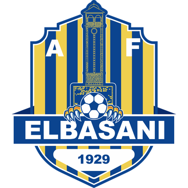
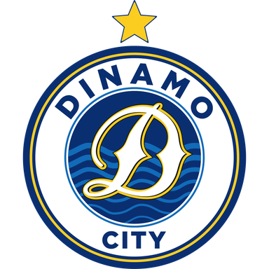
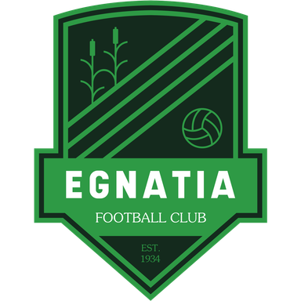
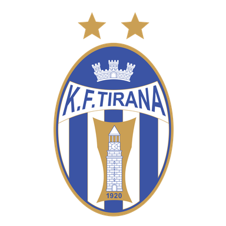
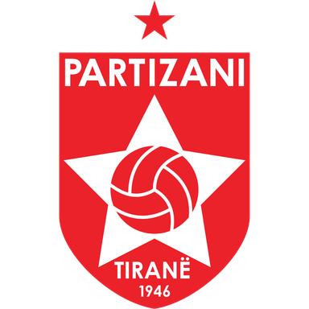
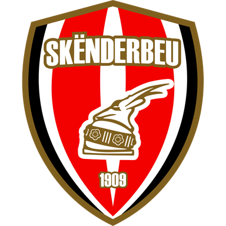
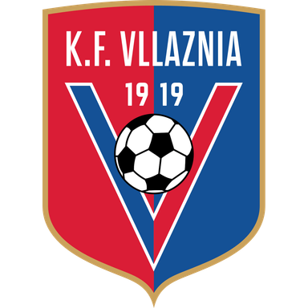
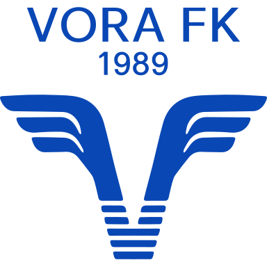

Logobank Seizoensvoorspellingen
675 clubs, 675 met logo. Clublogo's: football-logos.cc ; bij 'eigen logo' de officiële site van de club of bond, FootyLogos of Wikipedia. De logo's zijn eigendom van de clubs. Bijgewerkt: 2026-11-17.
Geen clubs gevonden.
Albanië Kategoria Superiore (10) 
Elbasani FotMob 10038 · AF Elbasani 
FC Dinamo City FotMob 10027 · Dinamo City 
KF Egnatia FotMob 10039 · Egnatia 
KF Tirana FotMob 10029 · Tirana Laçi FotMob 10031 · Laç 
Partizani FotMob 10028 · Partizani 
Skënderbeu FotMob 10033 · Skënderbeu Teuta Durrës FotMob 10037 · Teuta 
Vllaznia FotMob 10034 · Vllaznia 
Vora FotMob 585403 · eigen logo van footylogos.com Bulgarije First Professional League (14) IJsland Besta Deildin (12) Breiðablik FotMob 8332 · Breidablik FH Hafnarfjörður FotMob 8151 · FH Fram Reykjavík FotMob 6291 · Fram ÍA Akranes FotMob 8004 · ÍA ÍBV Vestmannaeyjar FotMob 8299 · ÍBV KA Akureyri FotMob 2165 · KA Keflavík FotMob 4472 · Keflavík KR Reykjavík FotMob 8130 · KR Stjarnan FotMob 6343 · Stjarnan Thór Akureyri FotMob 4496 · Thór Valur FotMob 8064 · Valur Víkingur Reykjavík FotMob 6017 · Víkingur R. Kazachstan Premier League (16) Aktobe FotMob 8000 · Aktobe Atyrau FotMob 2349 · Atyrau FC Altai Oskemen FotMob 732295 · eigen logo van altai-fc.kz FC Astana FotMob 166865 · Astana FC Kyzylzhar Petropavlovsk FotMob 2120 · Kyzylzhar FC Yelimay FotMob 200281 · Yelimay FK Kairat Almaty FotMob 8037 · Kairat Irtysh Pavlodar FotMob 2539 · Irtysh Kaisar Kyzylorda FotMob 2125 · Kaysar Kaspiy Aktau FotMob 200279 · Kaspiy Okzhetpes Kokshetau FotMob 2128 · Okzhetpes Ordabasy Shymkent FotMob 2127 · Ordabasy Tobol Kostanay FotMob 7983 · Tobol Ulytau FotMob 1622701 · Ulytau Zhenis FotMob 1614087 · Jenis Zhetysu Taldykorgan FotMob 2118 · Jetisu  Laçi
Laçi Teuta Durrës
Teuta Durrës